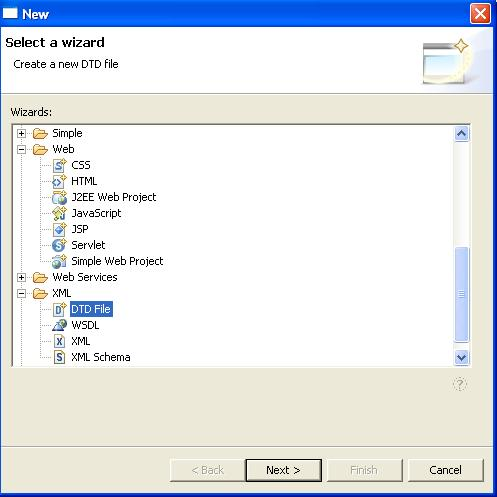
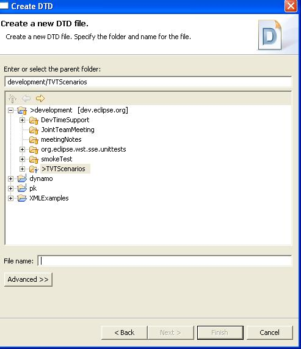
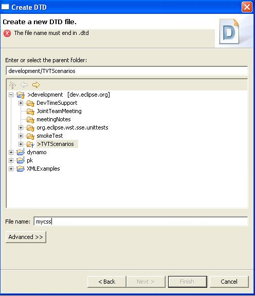
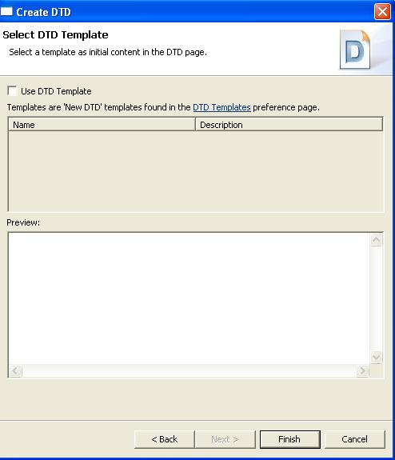
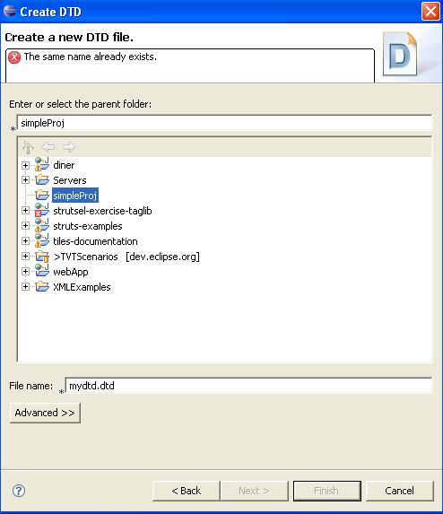

New DTD File Wizard
Steps:
- Go to File ->New ->Other ->XML and select DTD
- Verify description of DTD wizard, Create a new DTD file

- Click the Next button
- Verify the following in the Create DTD dialog:
- Create DTD
- Create a new DTD file.
- Create a new DTD file. Specify..
Note: Other translations are covered by IES.

- Type "mydtd.dt"
- Verify the error message that appears.

- Add the last 'd' for "mydtd.dtd" then press the Next
button.
- Verify everything on the Select DTD Template dialog
except the Back, Next, Finish, Cancel buttons (those are covered
by IES).

- Press Finish to create the file and leave the wizard.
- Try to create the same exact dtd file again, "mydtd.dtd"
in the same location.
- Verify the error message that appears.
